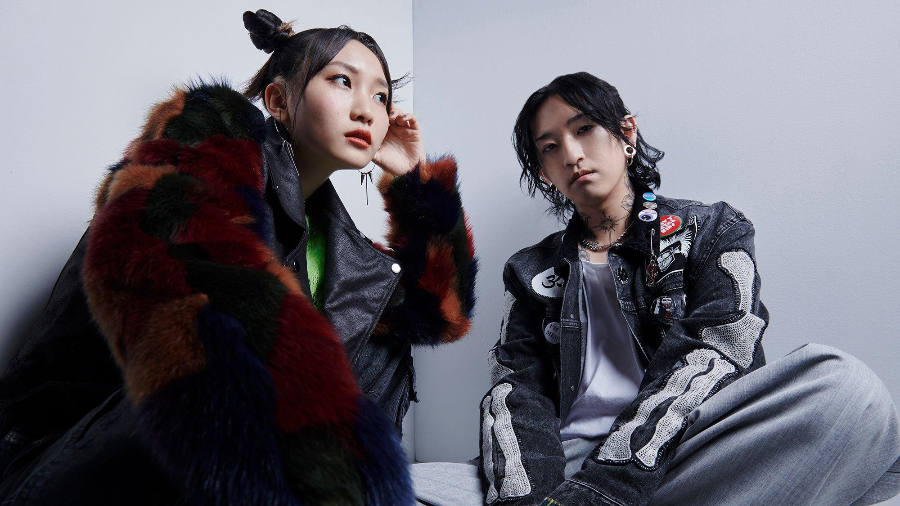

YOASOBI là một nhóm nhạc Nhật Bản gồm hai thành viên chính là Ayase và ikura. Tôi rất thích YOASOBI bởi vì các bài hát của nhóm có giai điệu bắt tai, phong cách âm nhạc đặc biệt và thường kể những câu chuyện thú vị thông qua lời bài hát.
Ayase đảm nhận vai trò sáng tác và sản xuất âm nhạc, trong khi ikura là giọng ca chính. Sự kết hợp giữa giọng hát trong trẻo của ikura và phong cách sáng tác của Ayase đã tạo nên âm thanh rất đặc trưng cho YOASOBI.
Điều tôi thích nhất ở YOASOBI là mỗi bài hát không chỉ có giai điệu hay mà còn mang theo một câu chuyện. Âm nhạc của họ có thể vừa sôi động, vừa cảm xúc và rất dễ nhận ra ngay từ những giây đầu tiên.